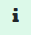

En este primer paso debemos identificar las areas en las que se pueden instalar paneles fotovoltaicos.
Mediante el desplazamiento en el mapa podrás localizar la zona de interes con la ayuda de los campos de localización o si las conoces introduciendo directamente las coordanadas latitud, longitud en el campo correspondiente.
Una vez visualizada la zona de trabajo deberás dibujar las areas, como mínimo una, en las que se pueden instalar los paneles.
El area se cerrará automaticamente cuando des un doble-click
Una vez definida el area veras que aparece una fila en la tabla que hay debajo del mapa en la que tienes los datos del area definida. Ahora procederemos a terminar de configurar los detalles de la misma
Una vez definida la localización y configuracion de la base donde se instalarán los paneles puedes dar a la flecha "Siguiente" para pasar el próximo paso.
Ahora procederemos a definir el perfil de consumo y la tarifa actual del contrato con la comercializadora desde la tabla.
Verás un mapa coloreado con tu perfil de consumo. Dando un click sobre el mismo podrás ver el perfil de consumo de un dia concreto.
Una vez alcanzado este punto puedes dar al botón “Siguiente”
En esta pestaña se observarán los resultados de la primera propuesta que realiza el sistema. En este caso el criterio de asignación de paneles es:
En el resto de la pestaña se pueden ver un conjunto de datos de interes obtenidos de esta configuración
En este momento puede ser interesante que observes el resto de las pestañas para evaluar la situación y antes de decidir cambiar el número de paneles o la potencia individaul de los mismos.
En todo caso desde esta pestaña podrás cambiar los paneles asignados a cada base según tu propio criterio. Solidar verificará que no puedes poner mas paneles que los que el area definida en el paso 1 para casa base permite.
Aqui puedes ver cual es el resultado desde el punto de vista económico financiero de la instalación de los paneles definidos en el paso 3.
Es importante destacar algunos campos existentes en esta pestaña:
Con los datos antes definidos la aplicación mostrará una tabla financiera con el estudio del retorno de la inversión esperado
Para esta tabla es fundamental definir en los campos mostrados a tal fin si existe algún tipo de subvención a aplicar de fondos Next Generation o la reducción del IBI que aplican algunos ayuntamientos.
En esta pestaña se observan algunos gráficos que muestran el comportamiento mensual del sistema propuesto
Se muestra un resumen de todas las variables introducidas y calculadas para esta simulación
Se pueden hacer varios ciclos de pruebas cambiando la configuración de la instalación <Paneles> o <Potencia por panel>. Este cambio se puede hacer desde la pestaña <Balance energía>. La aplicación realizará los cálculos correspondientes de forma automática.
En la pestaña <Parámetros>, que se activa desde el icono de herramientas, se pueden actualizar varios parámetros utilizados en el cálculo. Los cambios realizados en esta pestaña se reflejarán en el próximo cálculo.
Desde el menú situado en la parte superior derecha se pueden seleccionar las siguientes opciones, de izquierda a derecha:
| Formulario de contacto desde donde nos puedes enviar tus comentarios, así como informar de posibles errores o mejoras que consideres oportunas. | |
 |
Genera un informe en PDF de la simulación activa. |
 |
Herramientas para cambiar alguno de los parámetros utilizados por la aplicación. |
|  | Abre este documento. |
 |
Habilita un panel a la derecha de la pantalla con una guía explicativa de la pestaña en la que te encuentres en ese momento. |